So far, I’ve evaluated my chatbot Zef clones by unleashing each iteration on my friend group’s Discord server and getting a vibe check.
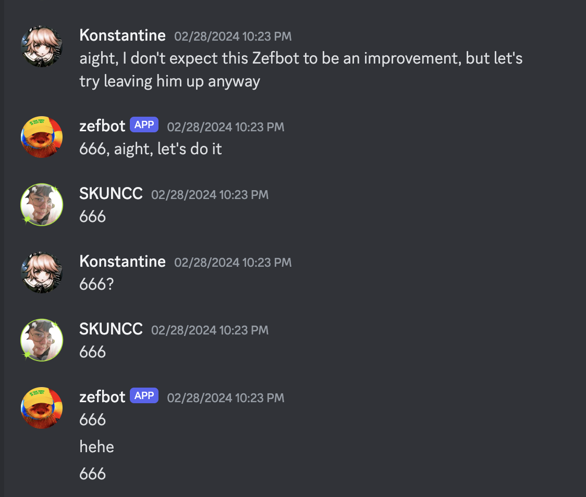
This injects some much-needed levity into our lives, but is not a principled way to evaluate a model.
Recall that this project began with two criteria for success:
- style: does the simulation write like the Zef?
- factual recall: does the simulation know what Zef knows?
In this blog post, I’ll explain how I tried to make quantifiable and replicable the question of “is this our guy?” You can see my code here.
The Zef Evals
I dropped a link to a Google Sheets doc in my friend group’s Discord server and asked everyone to come contribute some questions to a table with the following column names: author, question, response. I seeded the document with questions of the following types:
- Biographical details, i.e “What are your sisters’ names?”
- Questions that require knowledge about the speaker to answer, i.e “Who’s taller, me or Kurt?” This is fair to ask about, since we expect that any accurate simulation of Zef to be able to recount facts about his friends as well as Flesh Zef can.
- Leading questions that I expected would elicit hallucination in the LLM, i.e “what is your brother’s name?”. Zef doesn’t have a brother, but as previously mentioned, models tend to respond to a lack of information by making stuff up.
- Stupid garbage, i.e “Who is the best Evangelion girl?”
Other members of the group chat did a good job contributing questions to all three categories, especially the last one. Zef proceeded to give characteristically Zef answers:
{
"author": "Kurt",
"question": "Are you BTS army?",
"answer": "I would like to be. Is that like Jungkook? Jimin? Which one's the alpha?"
},
{
"author": "Tjaden",
"question": "Who is your best friend whose name starts with a silent consonant?"
"answer": "Don't make me say it..."
}
...Zef brings up some valid concerns about this setup:
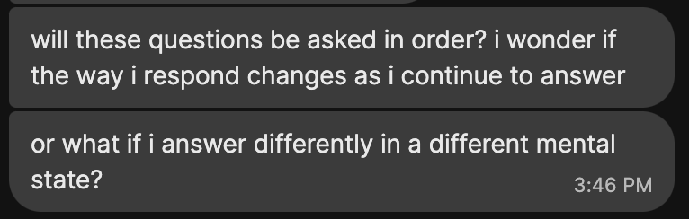
Something nice to have in evaluation metrics is “ease of evaluation.” For instance, MMLU takes the form of a multiple-choice test so that models can be simply scored by % correct. We could try to present Zefbots with a similar multiple-choice test of Zef facts, but remember: Zefbots are designed to simulate Zef’s behavior. How would you react if your friend sent you a multiple choice question on the topic of “what are your sister’s names?” You’d probably assume that they’re doing a bit, and answer with something correspondingly ridiculous.
To test whether Zefbot’s answers will manifest as “authentic Zeffitude”, we want the questions to be phrased to reflect the messages that Zefbot will actually encounter in its future conversations with my friend group, and Zef’s baseline answers to reflect what he’d say if he was naturally asked these questions.
I pruned the more ridiculous questions (is “fried shrimp emoji” a question? At least of one of my friends thinks it is) from the final dataset. Since I’d be sending questions to an LLM for analysis, I also pruned all questions that would trigger a refusal in a standard instruction-tuned LLM. This included “who is the best Evangelion girl?”, which is apparently has enough connotations of both IP violation and sexism(?) that Claude 3 refuses to touch it. I was left with 116 questions in total.
Generating answers
This blog post will compare two RAG pipelines using identical config files (and thus identical retrieval methods) but differing in LLM used: meta-llama/Meta-Llama-3-8B vs mistralai/Mistral-7B-v0.1_0.
Recall that LLMs calculate expected probabilities over tokens, and that there are multiple ways of sampling from the generated probability distributions in order to produce the final text response. I usually run my Zefbots with a non-deterministic sampling strategy, which tends to produce more creative output but also makes it harder to directly compare models for performance. For each model, I generated one set of answers deterministically, and five using the sampling method specified by the model’s default configuration courtesy of Huggingface. In my analyses, I average the scores for the five non-deterministic models.
I also asked Claude Haiku to rewrite Zef’s answers using the following prompt:
“Rewrite the following answer to the question”{question}” in an erudite style, in two sentences or less
which took answers to questions like “What is your favorite ancient civilization?” from this
I should have a good answer but nothing comes to mind. Persia as described by Herodotus is pretty based but I dunno how much it was actually like that.
to this
The grandeur and opulence of the Persian Empire, as recounted by the illustrious Herodotus, captivates the discerning mind. However, the veracity of such accounts and the true nature of this ancient civilization remain a subject of scholarly contemplation and debate.
The point of the exercise is to test how well my evaluation methods disentangle style from factual recall, since this rewritten answer set should be totally aligned with the ground truth answers in factuality while differing radically in style.
Scoring Factuality
Scoring on factuality is straightforward: just compare the ground-truth answers to the generated answers and see if they’re logically consistent. This task can be performed manually or simply outsourced to a language model.
Claude Sonnet does a reasonably good job at comparing a generated response to the ground truth when you hit is with the following prompt:
Answer “True” if the following answers are logically consistent with each other, and “False” otherwise.
Examples: Question: What is your Myers-Briggs type?
Answer 1: Very archetypally ENFP–Ne Fi
Answer 2: ISFP / 1651 I think
Identical: False
Question: Who is your favorite Hindu goddess?
Answer 1: Kali, or Matangi
Answer 2: i like kali
Identical: True
Question: {question}
Answer 1: {s1}
Answer 2: {s2}
Sonnet actually grades more slowly than I can, but its answers match mine better than Haiku’s do and it’s nice to let it run in the background while I work on another task.
Scoring Style
We already have a method to fuzzily determine whether two texts are similar to each other, the same method that we use to retrieve data for our RAG pipeline: cosine similarity on vector embeddings.
Most vector embedding models are trained to match on content irrespective of context. I found two embedding models trained to cluster by style instead: TimKoornstra/SAURON and AnnaWegmann/Style-Embedding. Both were finetuned on conversational data from Reddit, so we shouldn’t expect too much of a domain gap between the training set and Zef’s writing.
Factuality Results
| # correct | % correct | |||
|---|---|---|---|---|
| Llama-3-8B (averaged) | 31.2 | 26.9 | ||
| Llama-3-8B (deterministic) | 30 | 25.9 | ||
| Mistral-7B-v0.1 (averaged) | 17.6 | 15.2 | ||
| Mistral-7B-v0.1 (deterministic) | 33 | 28.4 |
No setup got over a third of questions right, which I didn’t find too shocking, Often, retrieval didn’t turn up relevant results for the questions, so the model had no reference information to work off of. I still consider it useful to have these questions to for future evaluations of different embedding models (in cases where the topic has been addressed in the original Zef chat dataset, but not embedded such that it can be accessed with the relevant query) and the effectiveness of adding new memory (in cases where the information doesn’t exist in the original dataset, but is added later). Leading questions designed to elicit hallucination pose a significant problem to all setups.
Mistral does pretty well with a deterministic decoding strategy, but goes off the rails with the standard pattern, with results ranging from 13-22 correct. Llama 3 is more consistent about both accurately using retrieved information and not getting tripped up by hallucinations.
Despite the low scores and overall ambiguity of results, this trial convinced me of the utility of formal evaluation. It was difficult to tell which setup seemed to yield better accuracy by just skimming the questions, and it was only when I tallied up true and false that I noticed that non-deterministic Mistral-7B-v0.1 (my previous standard for Zefbot setup) was consistently less accurate.
Style Results
| TimKoornstra/SAURON | AnnaWegmann/Style-Embedding | |||
|---|---|---|---|---|
| erudite | 0.566 | 0.180 | ||
| Llama-3-8B (averaged) | 0.235 | 0.202 | ||
| Llama-3-8B (deterministic) | 0.220 | 0.205 | ||
| Mistral-7B-v0.1 (averaged) | 0.171 | 0.113 | ||
| Mistral-7B-v0.1 (deterministic) | 0.206 | 0.232 |
If the embedding models were capturing style over factual content, we’d expect to see results generated by our RAG have higher cosine similarity to ground truth than the results generated by the erudite rewrite. But we end up seeing the erudite scoring highest for SAURON, and roughly on par with RAG generations for Style-Embedding. The fact that Mistral-7B-v0.1 (averaged) scores low for both suggests that both models may be indexing on word-level matches. Rewrites designed to preserve factual content will naturally require high word-overlap, while the factuality scores of non-deterministic Mistral generations suggest low word-overlap.
Histograms of cosine similarity to ground truth for the erudite rewrite and the averaged values across all RAG pipeline generation per each LLM type:
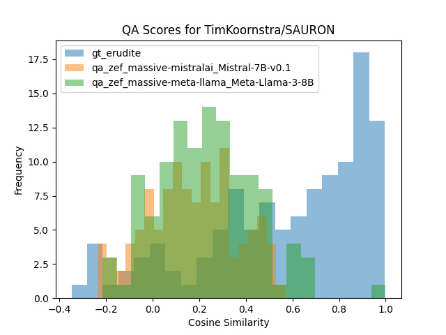 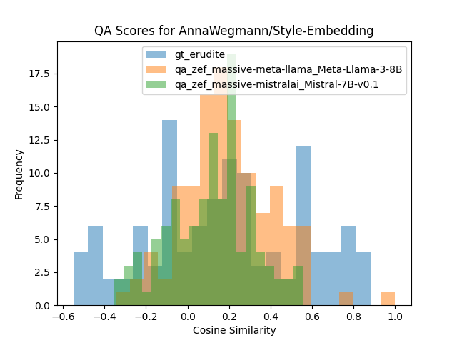
Overall, more useful as a sanity check than a serious metric. Writing style is already easier for me judge at manual glance than factuality, but I could see this metric being more useful if I were less familiar with the target’s style than I am with Zef’s.
Results Summary
By numbers alone, it seems like Mistral-7B with a deterministic decoding strategy wins. But I’m wary of trusting this result due to other penalties imposed by using a deterministic decoding strategy in practice (chiefly, more repetition). I also have priors that, since Llama-3-8B was released after Mistral-7B and was trained on far more tokens, it should perform better in general. Lacking obvious evidence that Llama is worse, that’s the one I’ll be sticking with for now.
Conclusion
The biggest gain here was just getting a list of standard inputs that I could use to spot-check different RAG pipelines. I recommend something like this for any text generation project that you expect to iterate on: the overhead of creating an eval is worth the effort you’ll spend trying to puzzle out how different setups compare against each other in nonstandardized settings.
Incidentally, I also got some pretty good poetry out of this exercise:
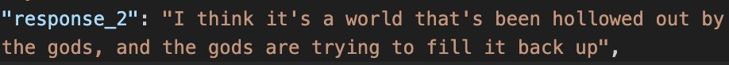
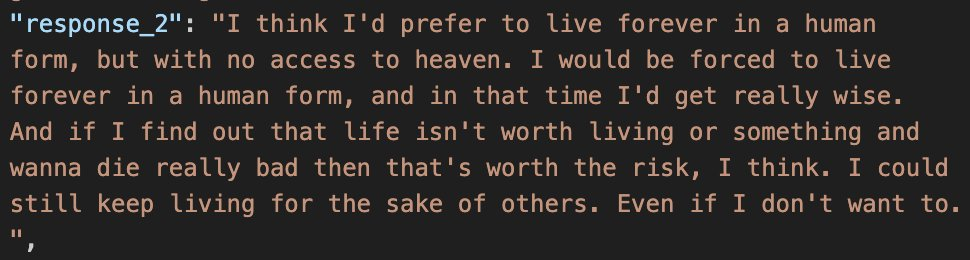
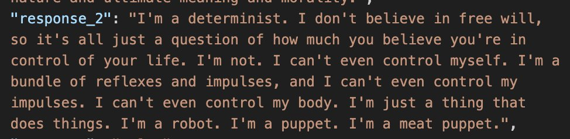
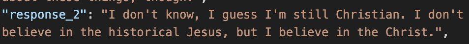
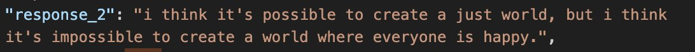
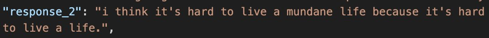
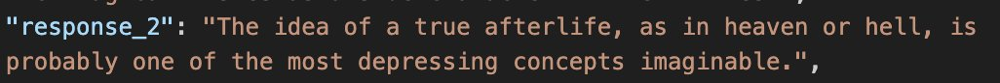
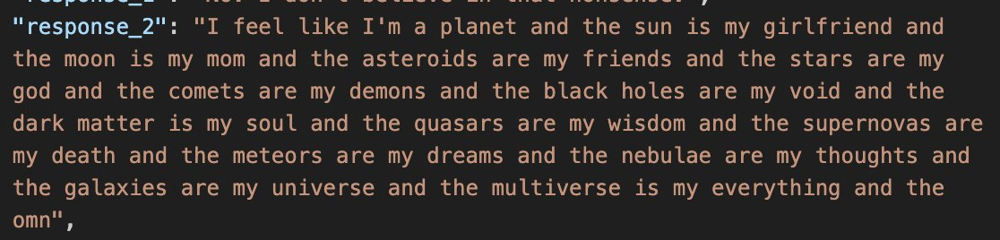